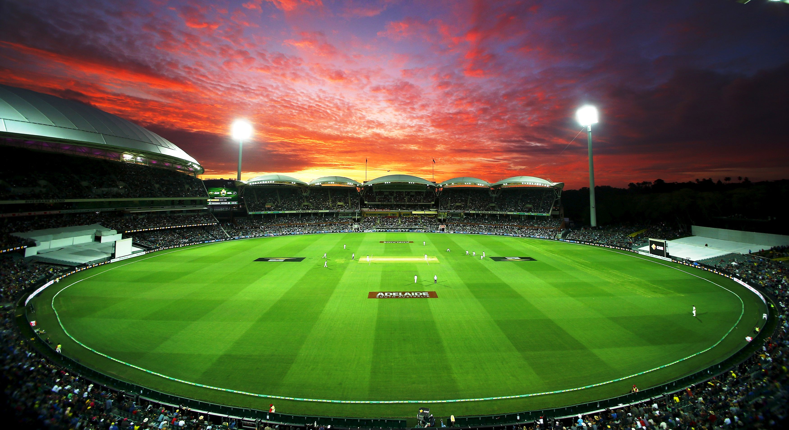
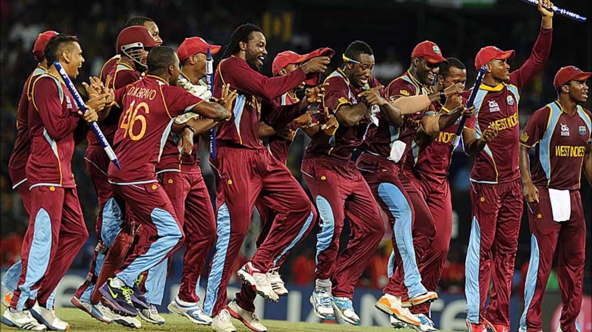
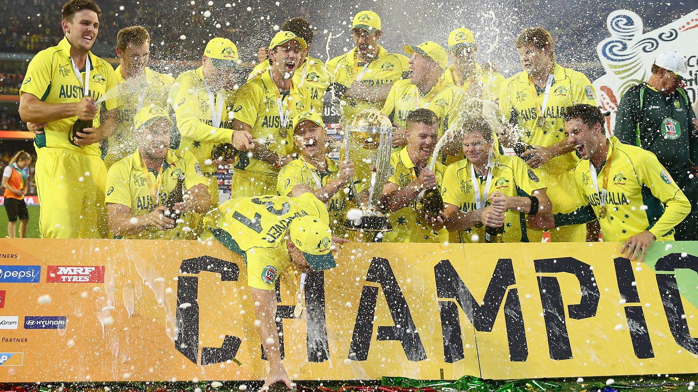
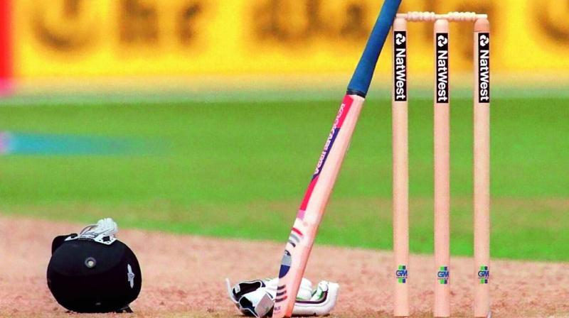

- Cricket Images



The International Cricket Council (ICC) is the global governing body of cricket. It was founded as the Imperial Cricket Conference in 1909 by representatives from Australia, England and South Africa. It was renamed as the International Cricket Conference in 1965, and took up its current name in 1989
The ICC has a long term ambition for cricket to become the world’s favourite sport and our four year strategy that will take us through to 2019 is the first step on that journey. During this period we will lead the continued drive towards more competitive, entertaining and meaningful cricket for players and fans.
Vision and mission
Boaxing day brings us cricket galore Big Bash league 2018 ICC world cup opener
Catch all the information about the 2019 world cup going to be held in ENGLAND
Watch all the ongoing matches happening International womens cricket